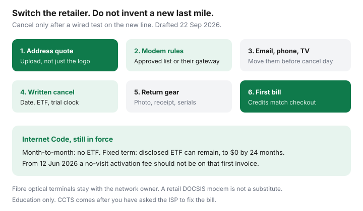

Internet · Canada
Switching to an Independent ISP in Canada: Availability, Modem, and Cancellation Checklist
People stay on a bill they dislike because the modem, the email address, and the cancellation feel like a weekend project that will go wrong. In Canada the last mile often does not change when the logo does. TekSavvy, Oxio, and other independents resell cable or fibre the big brands already built. What changes is the contract in your name. This checklist is the order of operations: availability, hardware, the services glued to the old account, then a cancellation that follows the Internet Code. Education only. Saving Optimizer is not those ISPs.
Disclosure: Education only. Independent internet plans and compatible modems or mesh routers are offer types. We do not currently claim a hardware or ISP partnership, and a later partner link would not change the checklist. No model here is “approved” until the ISP’s own list says so. Confirm live prices after an address check.
Key takeaways
- Check the full civic address. Wholesale cable or fibre is not available everywhere, and a fibre optical terminal usually stays with the network owner.
- Bring-your-own modem only works on an approved DOCSIS list for that plant. Rogers retail customers are often stuck with the provider gateway. Random U.S. hardware fails.
- Move email, home phone, and TV off the old account before the cancel date. The internet line is the easy part.
- Cancel in writing with a date. Month-to-month should have no early cancellation fee. A fixed term can still have one that declines to $0 by 24 months. CRTC 2026-43 did not delete that rule.
- The first new bill should match the checkout: promo credits, rental lines, and no activation fee unless a technician actually visited.
Check wholesale or fibre availability at the exact address
Start with three quotes, not thirty logos. The address method is incumbent, independent, and flanker. For independents, the useful Canadian names depend on the plant: TekSavvy on cable or fibre where it qualifies, Oxio on Cogeco, Videotron, or Rogers plant in the six provinces it publishes, plus regional resellers such as Start.ca, Carrytel, and Distributel where those checkouts light up. EBOX often sits on Bell fibre as a flanker, which is a different kind of “independent” from a third-party reseller. Fizz is Videotron’s flanker, not a neutral wholesaler. Use the Québec comparison if that is your plant.
Type the unit number. A house address that qualifies can still fail for the basement suite. Rural roads may show nothing but fixed wireless or satellite. If the independent checkout says “not serviceable,” stop. Do not call sales to talk them into a postal code.
Write the technology, the download, the upload, and whether usage is unlimited. A 100 Mbps cable plan with 10 Mbps up is not the same product as symmetrical fibre at a similar monthly rate. The speed worksheet tells you which number your household actually needs.

Bring your own modem, or rent one: DOCSIS and fibre realities
Cable resale (the wholesale product still called TPIA in older threads) usually means an approved DOCSIS modem list. The MAC address has to be registered. A box sold as “Comcast compatible” is not a Canadian approval. TekSavvy publishes loaner hardware on some plans and an approved-purchase path on others. Oxio includes a router and does not ask you to shop modems. Rogers retail service generally issues its own gateway; community bills still show a rental line around $10, sometimes wrapped into a term. None of that is a promise for your invoice.
Fibre to the home is stricter. The optical network terminal belongs to the network. You do not replace a Bell or Telus ONT with a modem you bought online. You add your own router behind it if the gateway allows pass-through. Budget the rental until you have read the equipment page. Payback math, including the “$150 at $10 a month is 15 months” sketch, is in buy versus rent.
| Plant | What you can own | What stays with the ISP |
|---|---|---|
| Cable wholesale | An approved DOCSIS modem, if the retailer allows it | The node and the drop. A loaner modem if that plan includes one |
| Big-brand cable (Rogers retail) | Often only your own router or mesh behind their gateway | The gateway. Return it or pay the non-return charge |
| Fibre to the home | Your router or mesh, if pass-through exists | The optical terminal and usually the hub |
| Fixed wireless or 5G home | Little. Placement of their gateway matters more | The indoor or outdoor receiver |
Move email, home phone, and TV add-ons before the cut
The outage people remember is not the internet. It is the password reset that went to a Rogers or Bell mailbox that died on cancel day. Two weeks before the switch:
- List every account that uses the ISP email: banks, CRA, utilities, schools, pharmacies. Move them to a mailbox you control. Send one test from each.
- Home phone on the same bill may be a VoIP line with a number you care about. Ask whether the number can be ported, how long the port takes, and what happens to 911 registration at the new address. Do not assume a mobile phone rule applies.
- TV packages, cloud PVR, and streaming logins that were “included” end with the bundle. Price what you will actually replace in the cord-cutting stack before you discover the sports package was the only reason the bundle looked cheap.
- Alarm systems and medical pendants that use the old modem need a plan. Call the alarm company, not the ISP salesperson.
Cancel the incumbent the Internet Code way
The Code, in plain English on this site, is the script. Large facilities-based providers (Bell, Cogeco, Eastlink, Northwestel, Rogers, SaskTel, Telus, Videotron, Xplore) are the core list. Smaller resellers may still be CCTS members. Either way, do this:
- Order the new service and wait until a wired device works. Overlap of a few days is cheaper than a week with nothing.
- Cancel the old service in writing with an effective date. Keep the confirmation. A phone call you cannot quote later is how double billing starts.
- If you are month-to-month, there should be no early cancellation fee. If you are inside a fixed term, ask for the remaining ETF: the total, how much it falls each month, and the date it hits $0. The Code says that fee, when allowed, reaches $0 by the lesser of 24 months or the end of the term.
- A brand-new contract that includes an ETF has a trial of at least 15 days (30 if you self-identify as a person with a disability), with a usage cap. There is also a 45-day cancel if the permanent contract conflicts with what you agreed or arrives late. Do not “wait and see” past the trial if the upload is wrong.
- CRTC 2026-43, in force 12 June 2026, is about activation and modification fees, and about wireless ETFs when there is no phone subsidy. It is not a coupon that erases a home-internet term. The ETF explainer keeps those rules apart.
First-bill checklist: promo credits and equipment returns
When the first independent invoice arrives, check it against the checkout screenshot:
- The monthly rate matches, and any bill credit is the amount and the number of months you were shown.
- There is no “activation,” “setup,” or “enrolment” line unless a technician visited. If there is, use the fee guide.
- Equipment rental is either included, as advertised, or the dollar figure you agreed. A second Wi-Fi pod you did not ask for comes off.
- The old ISP’s final bill stops on the cancel date. Return the old gateway and pods. Photograph serial numbers. Keep the drop-off receipt. Non-return charges are still allowed when the contract says so.
If a credit is missing, write the ISP before you dispute the entire bill. Pay the undisputed portion so you are not cut off for a $15 fight. CCTS (1-888-221-1687) comes after the provider has had a real chance to fix it.
When independents are not available, or not cheaper
Stay, or take a winback, when the 24-month total says so. Common cases: no wholesale at the address; fibre upload you need and the reseller only has cable; a term ETF that eats the monthly save; phone support you will use and the independent is chat-only; or a flanker on the same glass that already beat both. TekSavvy versus Oxio on an Ontario 100 Mbps sketch is worked in that comparison. Re-shop at your address. The winner changes when the credit ends.
Set a reminder 45 days before any promo dies. An independent that was the save in month one can be the expensive line in month 13 if you never looked again. The seven-day plan is the same calendar on a big-brand bill.
Sources & date stamps
- CRTC Internet Code, simplified — contract summary, trial period (15/30 days), 45-day mismatch cancel, fixed-term ETF declining by 24 months. Used 22 Sep 2026.
- Telecom Regulatory Policy CRTC 2026-43; CCTS fee page posted 2 Sep 2026 — activation versus a technician visit; internet fixed-term ETFs can remain.
- Saving Optimizer reads of TekSavvy, Oxio, Fizz, Rogers gateway practice, and Bell/Telus optical terminals, date-stamped on those guides (Fizz.ca notes 21 Sep 2026). Re-check live lists before you buy a modem.
- CCTS contact path — provider first, then 1-888-221-1687. Not a promise about your complaint.
Frequently asked questions
Do independent ISPs use a worse network?
Often they rent the same cable or fibre last mile as the big brand, under wholesale rules. The drop, the node, and many truck rolls are shared. What changes is the retail contract, the modem policy, the support channel, and the price after credits. An outage on the plant hits both.
Can I keep my Rogers or Bell email address?
Do not count on it. Move anything important to a mailbox you control before the cancel date. Forwarders disappear, password resets fail, and a bank notice sent to an old ISP address is how a switch becomes a locked account.
When can I cancel the old ISP without an ETF?
Month-to-month home internet should not have an ETF. A fixed term can still have a disclosed ETF that declines to $0 by the lesser of 24 months or the term, under the Internet Code. New customers with an ETF get at least a 15-day trial (30 days if you self-identify as a person with a disability), inside the usage cap. CRTC 2026-43 did not delete that home-internet ETF.
What if the independent is not available or not cheaper?
Then it is the wrong tool. Some rural addresses have no wholesale option worth using. Some fibre uploads are worth more than a cable reseller's monthly. Price 24 months, including equipment and the ETF, and stay or take a winback when that total wins.
Who do I call if the first independent bill is wrong?
The new ISP first, in writing, about credits and rental lines. If a banned activation fee appears with no technician visit, see the fee guide and the CCTS path. The Commission for Complaints for Telecom-television Services expects you to give the provider a real chance to fix it before a complaint.